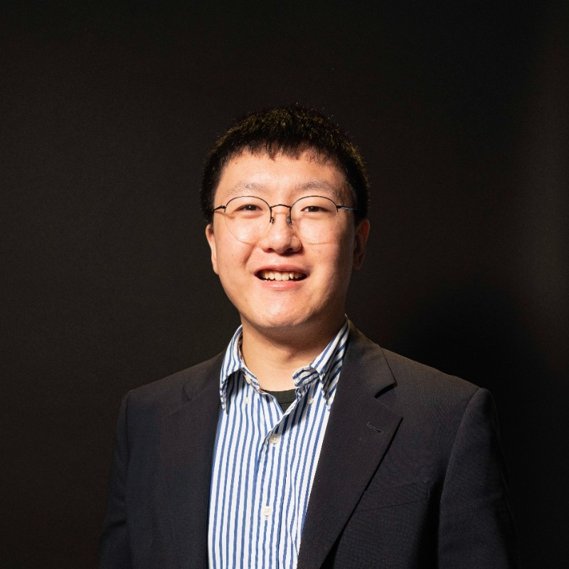

Cheng Cheng

Summary
As a multifaceted professional, I leveraged advanced VR modeling software,
including Adobe Substance, alongside 3D printing technologies to recreate the works
and collaborate with renowned and influential artists. The introduction of these advancements
has not only increased the efficiency and productivity of our operations but has also positioned
Gemini G.E.L. as a pioneer in embracing the fusion of traditional artistic excellence with modern digital possibilities.
Education
Master of Fine Arts: Arts And Technology, Computer Simulation 2020 -- 2022
California Institute of The Arts - Valencia, CA
Bachelor of Fine Arts 2015 -- 2019
Art Center College of Design - Pasadena, CA
Work experience
Founder, Managing Partner -- Alchem Group LLC., Los Angeles, CA
- Produced rapid prototypes using Xcode, Substance 3D Modeler, Grabcad.
- Negotiated with vendors and manufacturers on pricing, services and scheduled shipping windows.
- Liaised with customers, management, and sales team to better understand customer needs and recommend appropriate solutions.
Printer and Creative Technology Consultant -- Gemini G.E.L, Los Angeles, CA
- Multi-tasked to keep all assigned projects running effectively and efficiently.
- Examined job orders to determine quantity, stock specifications, colors and special printing instructions.
- Provide instruction on rapid prototyping tools and software based on projects' need.
- Research new production technology such as additive manufacturing and create case study report to stakeholders.
- Set up and operated printing press machines.
Skills
- Microsoft Office ◉◉◉◉◉
- Google Workspace ◉◉◉◉◉
- Cinma 4D ◉◉◉◉
- Consulting ◉◉◉◉◉
- HTML ◉◉◉◉◉
- Figma ◉◉◉◉
Awards and Certifications
- Google Data Analytics Certificate 2022
- FINRA SIE 2022
- Alice Epstein O'Connor Scholarship Scholarship Recipient
- Art Center College of Design Fine Art Department Scholarship
- Lillian Disney Scholarship
- Hoffmitz Milken Center for Typography Innovation Award
- Dean's List
Other